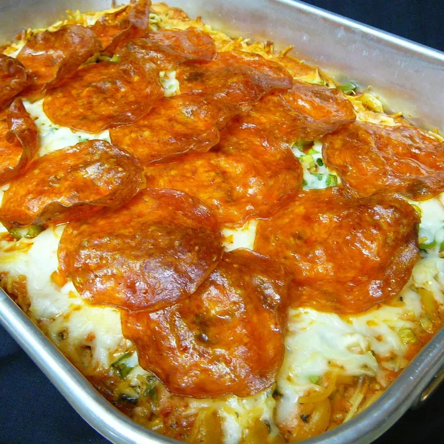

Spaghetti

Description
This baked spaghetti recipe is from my children's preschool. A fun combination of
pasta and pizza ingredients, it's always a hit with the kids.
- cooking spray
- 1 (8 ounce) package spaghetti, broken into 2-inch pieces
- 2 cups shredded mozzarella cheese, divided
- ¼ cup milk
- 1 large egg, beaten
- ¼ teaspoon salt
- ¼ teaspoon garlic salt
- 1 (16 ounce) jar spaghetti sauce
- 1 teaspoon dried oregano
- ¼ teaspoon dried basil
- 4 ounces pepperoni sausage, sliced
- Step 1: Preheat the oven to 425 degrees F (220 degrees C). Grease a
9x13-inch baking dish with cooking spray.
-
Step 2: Bring a large pot of lightly salted water to a boil. Cook spaghetti in
the boiling water, stirring occasionally, until tender yet firm to the bite,
8 to 10 minutes. Drain and rinse with cold water.
-
Step 3: Mix 1/2 cup mozzarella, milk, egg, salt, and garlic salt together in a
large bowl. Add drained spaghetti and mix until well combined. Spread mixture
into the prepared baking dish.
-
Step 4: Bake in the preheated oven for 15 minutes. Remove from the oven and reduce
the temperature to 350 degrees F (175 degrees C).
-
Step 5: Spread spaghetti sauce over noodle mixture. Sprinkle with oregano and basil,
then top with remaining 1 1/2 cups mozzarella. Arrange pepperoni over cheese.
- Step 6: Return to the oven and bake until cheese is bubbly and beginning to brown, about 30
minutes. Let stand for 5 minutes before cutting.